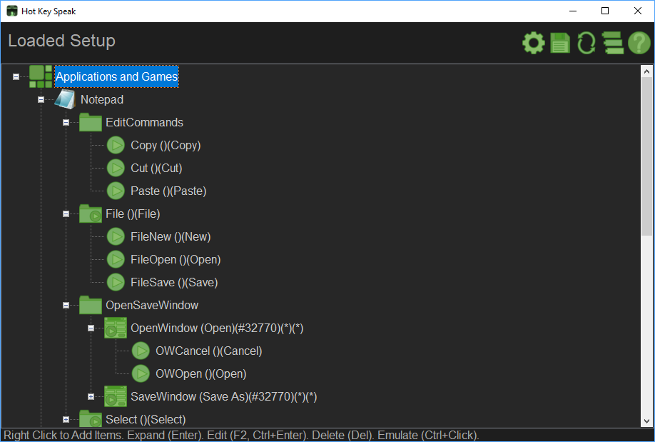

Main User Interface
The main interface is where everything happens. You use the interface to define the Hot Key Speak structure and, when the system is active, the main interface will show what items are being processed.


How to use
Right Click items in the tree-view to see a context sensitive Pop Up Menu that will allow you to add programs to the structure, add actions to perform when a sentence is spoken or a hot key is pressed, add actions to perform when a window is active and so on.
With the interface you can basically define what actions are performed and in what context are those actions available by adding Applications, Command Actions, Context Actions and Window Context Actions.
Tree-view
Hot Key Speak mainly consists of a Tree-view which contains various types of items and branches that allow specifying what applications and games you wish to design rules for.
It also helps to design and visualize the rule structure for each application.
When testing or when live the tree-view will visually demonstrate what is happening, what application is being handled, what actions are being performed and so on.
Below are the major components that constitute the tree-view items and branches.
Applications and Games

|
The Applications and Games item is the root branch were you can add applications to the Hot Key Speak system. Contained under this branch are application programs, such as work or entertainment software, and groups.
Applications listed under this branch will be detected by the system. When an application listed here becomes active, its branch will be activated along with the actions listed underneath it.
You can also add Groups under this branch to categorize the applications in a way that makes sense to you.
|
Applications

|
Each application you add to the system enables Hot Key Speak for that application.
The application branch shows the application icon extracted from the application's executable and the application name shown was determined by the application's main Window Title that was active at the time you added it using the Process Selector tool.
You can change the application name by editing the branch, you can also change the program itself which is useful to re-grab an application that changed folders, or to set a program for a branch you imported, or if you are making a rule set for a game, you can temporarily swap the application to another program for testing. You can set it to target Notepad for example which is a useful test platform to testing your code.
To the left is shown the Icon that indicates a program that has no icon or that indicates a program that is not installed or your machine. Windows 10 apps will show the Windows 10 App Logo.
Under the Application branch you can add Groups, Command Actions, Context Action and Window Actions.
NOTE
Windows 10 Apps are added as Window Context Actions under a special Windows Apps Application Entry.
|
Groups

|
Groups are used to categorize items in the tree-view in a way that makes sense to you.
Groups are mainly useful to split a ton of items that would use a lot of vertical space into smaller more manageable sections.
Since items in the branches are sorted by name as a mean to allow you to prioritize some of the action (See Window Action) a group may help you in the prioritize actions and contexts by allowing you to move alphabetical items that would normally find their way to the bottom of an action list by placing them in a group that is named in such a way that it is located at the top of the list. This may not make sense to you right now but it will as you start to develop Window Action based rule-sets.
Groups can be added under pretty much any items that support sub items, like Applications and Games, Applications, Context Actions, Window Actions and other Groups, they will take the identity type of the parent item. Later with the copy and paste this identity type will help to ensure items are not moved under the wrong type of container.
Aside the case mentioned above for Groups allowing changing a Window Action ordinal position, groups are basically ignored by the run time engine. Items located under a group will look like they are located directly under the main branch of the group hierarchy. So items under a Group in the Application branch will look as though they are under the Application branch
Change Note: With the Addition of the Enabled Flag, Disabled Groups will disable the Actions and Items located under them.
|
Command Action

|
A Command Action allows you to define a hot key and the spoken keywords or sentences that will trigger the action when the key is pressed or the sentence is detected.
Command Actions can be added to an Application branch, a Group branch, a Context Action branch or a Window (Context) Action Branch.
Commands Actions Located under a Context Action or a Window (Context) Action become active when that Context is active.
Command Actions underneath an Application branch, or in a Group that acts like an Application branch are always active unless a Window Context is active.
|
Context Action

|
Context Actions work like Command Actions, they allow you to define a hot key and the spoken keywords or sentences that will trigger the action when the key is pressed or the sentence is detected.
A Context Action also limit the commands to what is listed underneath it, at least that was the initial intent... After long hours of testing it was found that a Context should not disable the Root command nor should it disable the Commands situated at the same level in the tree-view.
Context Actions can be added under an Application, under a Group, under another Context or under a Window Context.
Context Actions Located under another Context Action or a Window (Context) Action become active when that Context is active.
Context Actions underneath an Application branch, or in a Group that acts like an Application branch are always active unless a Window Context is active.
|
Window Context Action

|
Window Context Actions are used to associate a set of actions to a specific window. When that window is active, only the actions underneath its matching Window Context Action can be triggered.
Window Actions can only be added underneath Application branches or in Groups under the Application branch.
A Window Action disables every actions not located underneath it when the matching window is active. That, until a new window pops up, or until the matching window is dismissed.
The search of a Window Action is performed in order of appearance in the tree-view, that is why the tree-view is sorted as a means to allow you to position the Window Action in the right position by naming it properly. You can use a group to help position the item in the right position. I understand that this method may be a little off putting but it was the simplest way to ensure the right window is chosen.
As an Example, if you have a Window Action the allows detecting any window, (*,*,*,*) located before a Window Action that allows detecting say a Save As Window (Save as..., *, *, *). The Save as Window Action will never be chosen as the Any Window action will be found first.
NOTE
Windows 10 Apps are added as Window Context Actions under a special Windows Apps Application Entry.
|
File Resouce

|
File Resources are used to store any file the Hot Key Speak rule would need... I have rules that play sound files as a way to discretely inform me that an action has taken place....When I added the ability to save tree branches and saw the potential of sharing rules I also saw the need to include any external file the rule requires, so I added the ability to save the file in the tree-view data itself making it easier to share rules that require external files.
This system should only be used for small file.
WARNING! This opens the door for potential back door installation of malware! Obviously Hot Key Speak is a System that Runs Code, and so the potential harm is there with the code alone.
I debated if including a file would be worth the risk and concluded that since the system allows running code, having a system that allows distributing files or not, the risk is there from the start so adding this feature would not exponentially make this worst than it already is. You should ensure that the file included is used properly by inspecting the code in the rule set. You can also export the file yourself and take a look at it to make sure a wav file is a wav file for example.
You will find me stressing the fact that Hot Key Speak runs Code numerous times in this document and how potentially dangerous this is, you have to be aware of the risks involved especialy when using rules sets you did not write!
|
Tool Ribbon
The tool ribbon allows you to access features pertaining to the UI Window. In this case, The Main Options, Saving, Reloading, Accessing the Support Forum and the Help System.
Options

|
Opens the Options Window where you can change the settings pertaining to the System's Behavior. You can use the Options Window to access the Voice Recognition settings, fix Issues and train the Voice Recognition System. There you can also turn Off Features you don't want to use.
The Options Window allows you to turn features on or off, such as disabling the Hot Key system or the Speech Recognition system.
The Options Window also gives you access to the MS Voice Recognition system so you can tweak the settings and train the Voice Recognition for better operations.
There you also have access to the Console Window and the debug level the system is to be using for displaying information through the console window. If you are developing a rule set, this option is useful to see where problems occur, what the system is doing under the hood and what pertinent information is in context to what you need to do.
|
Save

|
Use this to save your changes! The window will flash after the save is complete.
The system uses one file to store everything. You don't get to choose what that file is. There is a backup performed for every save you make. And you can use the Save File feature in the right click menu to save your rule set(s).
Be sure to go in your backup folder once in a while to cleanup any backup you don't need. Use the Options Window Temp Folder Link to navigate to the Application's Temp folder and navigate from there to find the backup folders and clean the backup files.
|
Reload

|
Use this to reload/restart the program. A save will be done if changes were detected prior to reloading.
Some changes made to the rule set require a reload for them to take effect, such as changing the Speech Recognition phrases.
|
Support Forum

|
This will launch a browser to the support forum where you can discuss issues with and ask for help from other fellow users.
The forum can also be a place to share Rule Files.
|
Help

|
Brings you Here! To the Help System!
|